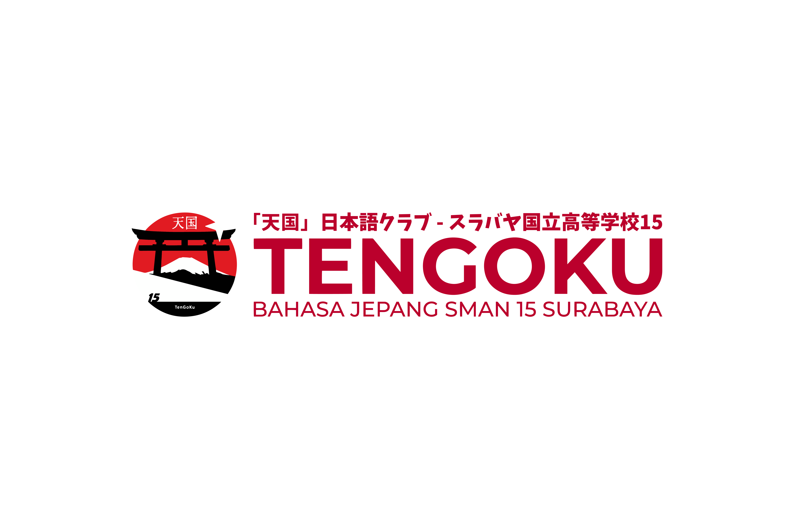
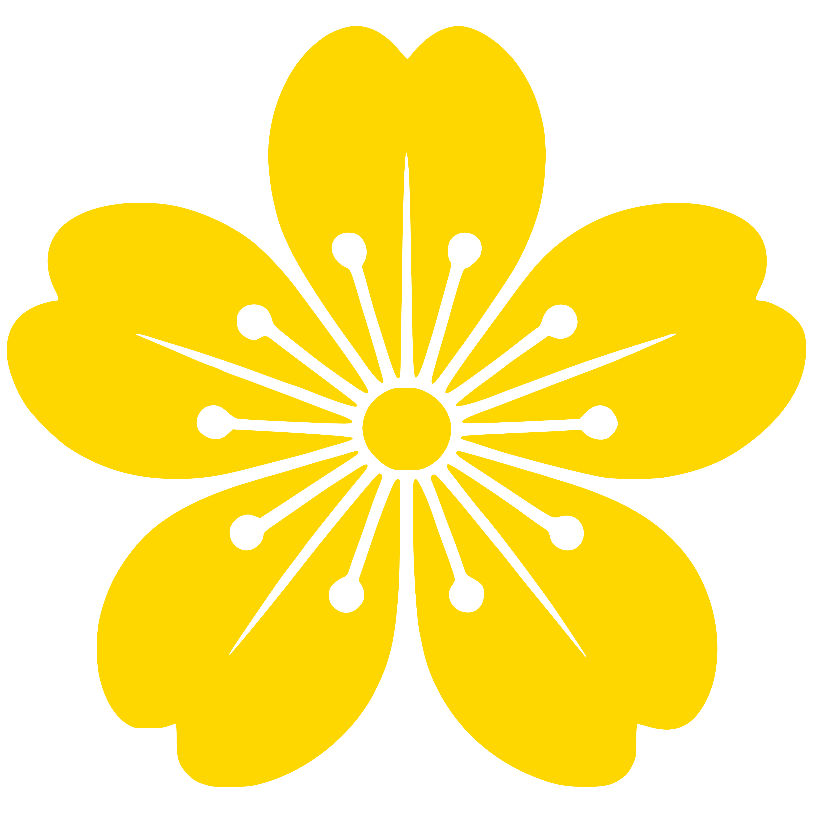
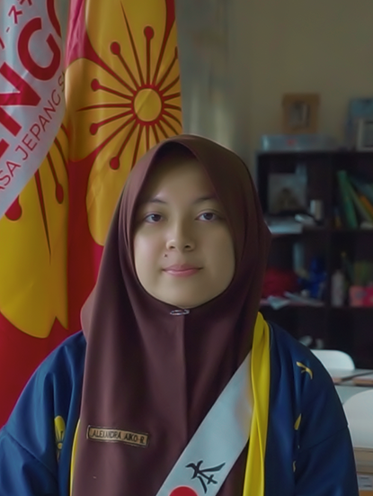
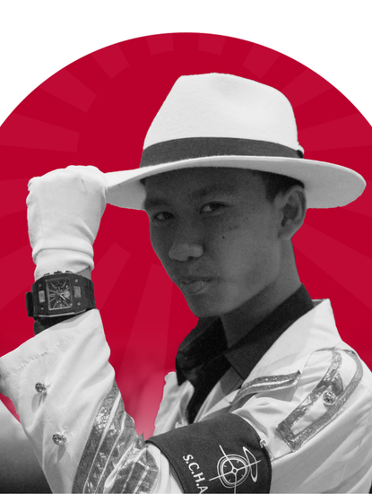
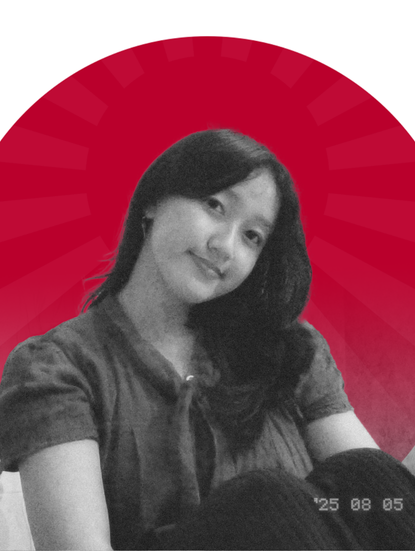
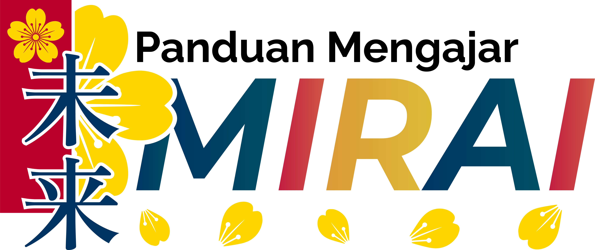

Tentang Kami
Berdiri sejak Januari 2023, Klub/Ekstrakurikuler Jepang SMAN 15 Surabaya terus berusaha untuk terus mencetak para generasi yang berprestasi pada bidang bahasa dan budaya Jepang hingga detik ini.
Bendera Lambang Sakura
Bendera Klub/Ekstrakurikuler

Bendera Perlombaan

Lambang Sakura Kuning berkelopak 5 berlatar Merah - Adalah lambang dari TENGOKU, digunakan sebagai pengganti logo utama di keadaan atau situasi formal dan tertentu.
Raditya Alfareza H.
M. Noor Rachmad Dwiartha

Alexandra Aiko R.
M. Yusuf Rasyad

Raditya Ganthari Arsa

Limeily Sugiarto
M. Fauzan Alfinsya
Ziad Hersasmaya
Raditya Alfareza H.
M. Irza Zakaria A.
Mahardhika Ananda P.

Sebuah Panduan yang dibuat untuk mengatur seluruh sistem pembelajaran TENGOKU agar dapat selalu menjaga kualitas dan gaya belajar yang dibutuhkan. Kami sadar bahwa setiap instansi pendidikan membutuhkan sebuah standar untuk menjalankan sebuah kegiatan belajar mengajar, maka dari itu dengan adanya Panduan Mengajar ini, ditujukan agar TENGOKU bisa terus meningkatkan kualitas prestasinya siapapun yang mengajar dan belajar.
Minna-san bisa akses Panduan Mengajar ini melalui Halaman Kurikulum. Disitu Minna-san bisa mengetahui bagaimana TENGOKU bisa menjamin kualitas pembelajaran dan gaya belajar Minna-san dengan melihat beberapa Panduan Mengajar, Panduan membuat Soal, hingga Panduan untuk membuat Modul yang kami sediakan. Tempat yang cocok untuk para Sensei baru yang ingin meneruskan semangat mengajarnya di TENGOKU.


Membuat Sumber Daya Manusia yang lebih siap dalam bersaing dengan hal yang berhubungan dengan Jepang.